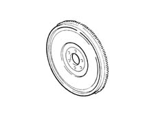
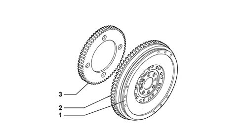
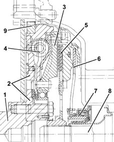
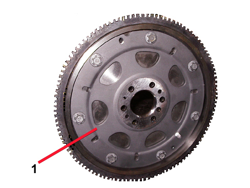

1024B ENGINE FLYWHEEL
- Path
- Descriptions > 10 ENGINE > 1024 CRANKSHAFT AND FLYWHEEL > 1024B ENGINE FLYWHEEL
- Kind
- system description
- Applies to
- engines: 1.2 8v, 1.4 8v, 1.3 JTD 16V, 1.9 JTD 8V, 1.9 DIESEL; all production periods
- Interactive page
- https://sloeber94.github.io/elrnDB-fDbl/en/#/2582276
Applies to: engines: 1.2 8v; all production periods
In cast iron, with a press-fitted steel ring gear.
The flywheel is bolted via a flange to the crankshaft.

This makes the engine turn smoothly. It accumulates energy during active stages (expansion) and returns it during passive stages.
The flywheel is designed to allow the engine to idle without stalling and to overcome the friction developed by the engine during no-load operation.
Applies to: engines: 1.3 JTD 16V; all production periods
The flywheel is made of cast iron with steel toothed ring.
The flywheel is secured by a flange with bolts to the crankshaft, and on the engine side there is a phonic wheel for the rpm sensor.

1 - Flywheel
2 - Toothed wheel
3 - Phonic wheel for rpm
The flywheel makes the engine turn smoothly, by accumulating energy during the active stages (expansions) and returning it during passive stages.
The flywheel is designed to allow the engine to idle without stalling and overcome the friction developed by the engine during no-load operation.
Applies to: engines: 1.9 DIESEL; all production periods
In cast iron, with a press-fitted steel ring gear.
The flywheel is bolted by a flange to the crankshaft. The flywheel is designed to allow the spanner for removing the oil sump bolts to pass through.
Applies to: engines: 1.9 JTD 8V; all production periods
In the twin mass DVA (twin damping flywheel) system, one is fixed to the crankshaft and one to the gearbox main shaft with a flexible damping system in between.
The resonance points which, in traditional systems, are at 800 and 2200 rpm, have been moved towards lower rotation speeds, outside of the usage range.
The clutch engagement, positioned between the twin flywheel and the gearbox, is made up of a rigid disc (without springs) which, on account of reduced inertia, improves the manoeuvrability of the gearbox.

1, Crankshaft
2, Mass fixed to the crankshaft
3, Mass fixed to the gearbox main shaft
4, Flexible damping system
5, Clutch disc
6, Flexible coupling spring
7, Thrust bearing
8, Gearbox main shaft
9, Ring gear
Technical advantages
The use of the twin shock absorber flywheel instead of a normal flywheel provides the following advantages:
- damping the engine irregularities transmitted to the gearbox with a consequent decrease in level of transmission noise;
- reduction of the rumbling noise in the car interior, as the D.V.A. makes it possible to shift the frequency generated by the transmission below the frequency corresponding to the engine idle speed, attenuating the total noise;
- reduction of the inertia to be synchronized on the gearbox main shaft, as the clutch disc is lighter, being rigid.
Applies to: engines: 1.4 8v; all production periods
CONSTRUCTION SPECIFICATIONS
Made from cast iron with a steel ring gear.
The flywheel is fastened by means of a flange with bolts to the crankshaft.

OPERATION
It is the component that ensures that the engine rotation is even, accumulating energy during the active stages (expansions) and restoring it during the passive stages.
The flywheel is designed to allow the engine to idle without cutting out and overcome the friction developed whilst it is running in no load conditions.